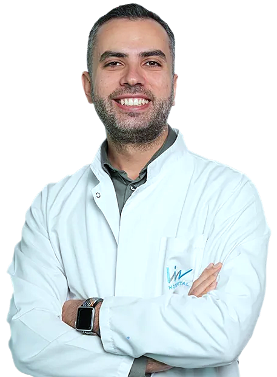

Gebelik takibi
İlk ultrasondan doğuma kadar düzenli kontroller, tarama testleri ve bebeğin gelişiminin izlenmesi.
Kadın hastalıkları ve doğum uzmanıyım. Gebelik takibinden doğuma, PKOS'tan laparoskopik ameliyatlara kadar her adımı anlaşılır şekilde anlatmayı seviyorum; bilgilendirici videolarım da bunun için var.

🤰Gebelik takibi 💧Suda doğum 🌿PKOS 🔬Laparoskopiİstanbul'da büyüdüm, Marmara Üniversitesi Tıp Fakültesi'nin İngilizce bölümünü bitirdim ve uzmanlık eğitimimi Zeynep Kamil'de aldım.
Uzman doktor unvanını aldıktan sonra Sakarya'da 2 yıl devlet hastanesinde, 2 yıl özel sağlık kurumunda çalıştım. 2024 sonundan bu yana Liv Hospital Vadistanbul'dayım. Bilimsel toplantılarda konuşmacı, moderatör ve oturum başkanı olarak yer alıyor; bilimsel çalışmalara ve tıbbi referans kitaplarına katkı veriyorum.
Kadın sağlığının her döneminde, ihtiyaca göre planlanan takip ve tedavi.
İlk ultrasondan doğuma kadar düzenli kontroller, tarama testleri ve bebeğin gelişiminin izlenmesi.
Ek takip gerektiren gebeliklerde yakından izlem.
Vajinal doğum, sezaryen, SSVD ve suda doğum.
Jinekolojik endokrinolojik bozuklukların değerlendirilmesi ve takibi.
Jinekolojik ameliyatlarda kapalı (endoskopik) yöntemler.
Çocuk sahibi olmakta güçlük yaşayan çiftlerin değerlendirilmesi.
Uygun hastalarda lazer ve estetik jinekoloji uygulamaları.
Hangi yöntemin uygun olduğuna, gebelik boyunca anne ve bebeğin durumuna göre birlikte karar veririz. Bir karta dokunun.
Doğumun doğal yolla gerçekleşmesi. Gebelik takibi boyunca anne ve bebeğin durumu uygunsa planlanır; süreç boyunca yanınızda oluruz.
Normal doğumTıbbi olarak gerekli görüldüğünde bebeğin cerrahi yolla doğurtulması. Gerekçesi ve süreç, önceden ayrıntılı olarak konuşulur.
Planlı ya da acilSezaryen sonrası vajinal doğum. Daha önce sezaryen olmuş annelerde, koşullar uygunsa değerlendirilen bir seçenektir.
Sezaryen sonrası normal doğumUygun gebeliklerde, ılık su dolu bir havuzda gerçekleşen vajinal doğum seçeneği.
Uygun gebeliklerdeGebelik takibinde genellikle hangi haftada neler yapıldığını kısaca özetledik. Aşağı kaydırdıkça sayaç ilerler.
İlk muayene ve ultrason; gebelik kesesinin yeri ve bebeğin kalp atımı değerlendirilir.
Kan testi ve ultrasonla yapılan ilk tarama; ense kalınlığı (NT) ölçülür.
Gerekli görülürse üçlü ya da dörtlü tarama testi yapılır.
Bebeğin organları ve gelişimi ayrıntılı olarak incelenir.
Gebelik şekerine yönelik tarama yapılır.
Kontroller sıklaşır; bebeğin büyümesi, pozisyonu ve amniyon sıvısı izlenir.
Bebeğin kalp atışları NST ile izlenir; doğum yöntemi ve zamanı birlikte planlanır.
Takvim her gebelikte farklı olabilir; size özel plan muayenede belirlenir.
Son adet tarihinizin ilk gününü girin; gebelik haftanızı ve tahmini doğum tarihinizi hemen görün.
Hesaplama, 28 günlük döngüye göre yapılan tahmindir; kesin bilgi için muayene gerekir.
Instagram'da gebelik, doğum ve kadın sağlığı üzerine bilgilendirici videolar paylaşıyorum. Sabit hikâyelerde konu konu arşiv var.
İngilizce tıp eğitimi.
Kadın hastalıkları ve doğum uzmanlık eğitimi.
Hendek İlçe Devlet Hastanesi (2021–2022) ve Özel Medar Sakarya Hastanesi (2022–2024).
Kadın hastalıkları ve doğum uzmanı.
Jinekolojik Cerrahi ve Prensipleri, Akademisyen Kitabevi
Muayene randevuları Liv Hospital üzerinden alınır. Soru sormak için Liv'in "Hekime Sor" formunu kullanabilirsiniz.
Ayazağa Mah., Kemerburgaz Cad., Vadistanbul Park Etabı, 7F Blok, 34475 Sarıyer / İstanbul